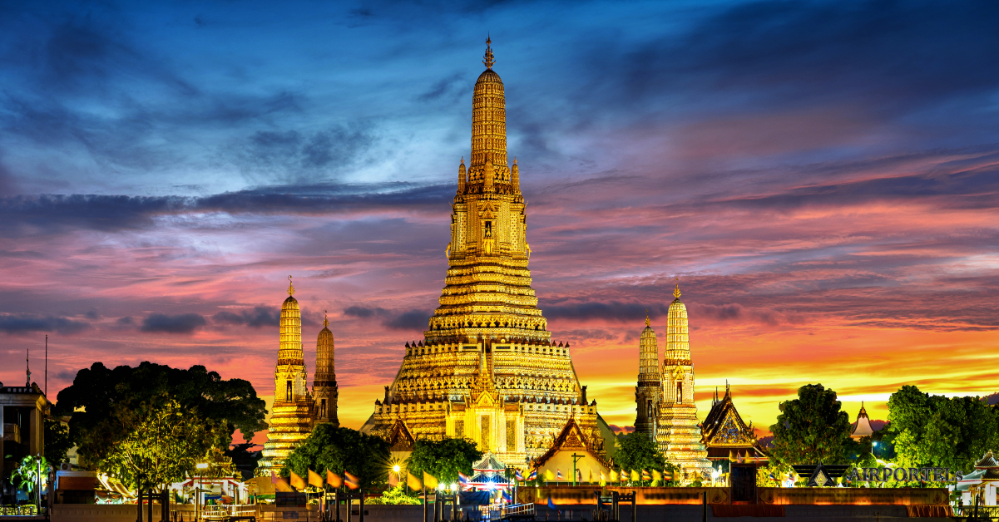
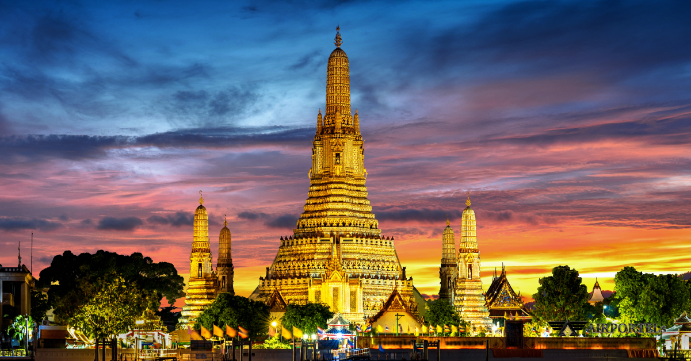

แหล่งท่องเที่ยวกรุงเทพมหานคร


 

กรุงเทพมหานครเป็นจุดหมายปลายทางท่องเที่ยวระดับโลก
มีแหล่งท่องเที่ยวหลากหลายทั้งด้านวัฒนธรรม ประวัติศาสตร์ และวิถีชีวิตเมือง
นักท่องเที่ยวสามารถเยี่ยมชมวัดและสถานที่สำคัญ เช่น พระบรมมหาราชวัง วัดพระแก้ว
รวมถึงแหล่งท่องเที่ยวสมัยใหม่อย่างห้างสรรพสินค้า ตลาด และแหล่งบันเทิงใจกลางเมือง
กรุงเทพยังมีเสน่ห์ของวิถีชีวิตริมแม่น้ำเจ้าพระยา
อาหารสตรีทฟู้ดชื่อดัง และย่านท่องเที่ยวที่มีชีวิตชีวาตลอดทั้งวันและคืน
ในหน้านี้ได้รวบรวมข้อมูลแนะนำเกี่ยวกับแหล่งท่องเที่ยวในกรุงเทพมหานคร
เพื่อช่วยให้คุณวางแผนการเดินทางและค้นหาประสบการณ์ที่น่าประทับใจได้อย่างสะดวก